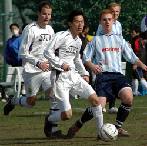
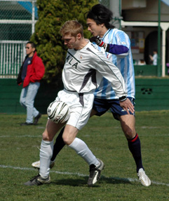

|
YC&AC, Saturday 10th March, Yep, a good day for the BFC but neither Sala or YCAC seemed too disappointed with their respective points after a 0-0 draw. Certainly YCAC, with a record of 1 draw and 5 losses against Sala in the TML thus far and only 10 men on hand as KO loomed, would have settled for a draw at 10 past one on saturday.
The 3 teams at the top will all still believe that they control their own destinies and even though there are only 4 games left, at least for BFC and YCAC, there are still too many permutations left for anyone to bother tallying poultry. Those permutations ought to include the Swiss and the Hibs but neither seem to have the heart for the extra competition this season and are going backwards
1.15 KO and YCAC are at full strength, 11 +a linesman. Guido has different problems, 16 fit players raring to go and making sure he knows it, constantly. The number of substitutions completely bewilders John Sturges (sp?) fresh from the UK and reffing his 1st game, apparently, where rolling subs are allowed. The ritual lining up at the end of the game also seemed to throw John who, probably fresh from reffing in South London, thought something very different was about to transpire and began edging towards his car. A top ref though and very welcome to the TML ranks

Both Sala and YCAC have class players in midfield, Shige and Anthony to name 2, but any spectators present on saturday will have to take my word for it because neither saw anything of the ball. Not that it was a bad game, it was enthralling for the most part, but the 2 teams by and large cancelled each other out and, with so much at stake, the ball mostly went from back to front without stopping anywhere en route for a break. From where I was standing, YCAC looked the more likely to score in the 1H. Jamie Richards was a real handfull and Sid seemed to need at least 1 grab at everything that came his way, though it may have been his shiny new gloves to be fair. Frustratingly we didnt get the ball to Jamie at all in the 2H, credit to Clarkey and his cohorts I suppose, and we didnt test Sid in any way shape or form after HT. Joe Takeda had the ball in the net but was called back from his 40 yard celebratory dash after the ref had ruled that he had taken the freekick too quickly. ManYoo get those calls but we never do
Not too much action at the other end either. Koka was commanding and dealt bravely with crosses under pressure but wasnt called upon to display his renowned shot stopping skills. Kevin Morgan and the rest of his defence was outstanding in the absence of Damo and Dickie, usually our most important players, and nullified the same Sala forward line that had torn us apart 3-0 earlier in the season
0-0 then and YCACs 1st clean sheet and only 2nd point ever against Sala. Defence sorted, at least temporarily but still only 3 goals scored in 7 games against the Chibians whose collectively very large players seem to just take up too much of the limited space available on the YCAC pitch.
Still all to play for then, for everybody in fact. All 10 teams are either still in with a shout for the title or in danger of relegation and that aint half bad this deep into a season
Report by Steve Taw.
|